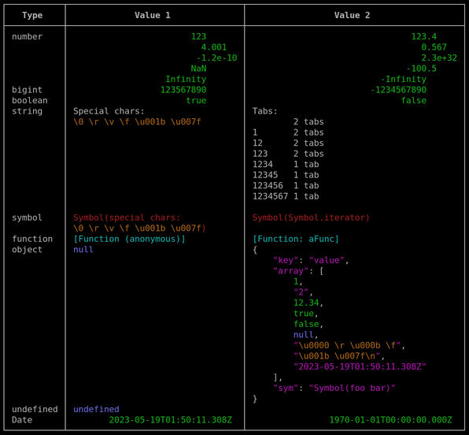

Print Table
Print Table

A library to print a nicely formatted table, because I didn't like console.table().
This library has no dependencies whatsoever, though when colors are enabled it prints
ANSI escape sequences (which are supported by the console of Chromium based browsers).
The table style (what kind of border line characters are used) and the colors (e.g. ANSI escape sequences) can be overridden to your liking.
Example Usage
function aFunc (a: number, b: number) {
return a + b;
}
printTable([
['number', 123, 123.4],
['', 4.001, 0.567],
['', -1.2e-10, 2.3e32],
['', NaN, -100.5],
['', Infinity, -Infinity],
['bigint', 123567890n, -1234567890n],
['boolean', true, false],
['string', 'Special chars:\n\0 \r \v \f \u001b \x7f',
`Tabs:
2 tabs
1 2 tabs
12 2 tabs
123 2 tabs
1234 1 tab
12345 1 tab
123456 1 tab
1234567 1 tab
`],
['symbol',
Symbol("special chars:\n\0 \r \v \f \u001b \x7f"),
Symbol.iterator],
['function', ()=>{}, aFunc],
['object', null, {
key: "value",
array: [1, 2n, 12.34, true, false, null,
"\0 \r \v \f", "\u001b \x7f\n",
new Date()],
aFunc,
anonFunc: () => {},
undef: undefined,
sym: Symbol("foo bar"),
}],
['undefined', undefined],
['Date', new Date(), new Date(0)],
], {
header: [
'Type',
'Value 1',
'Value 2',
],
columnBorders: true,
});
Screenshot illustrating printing with colors:

Plaintext output:
┌───────────┬──────────────────────────────────┬──────────────────────────────────────────┐
│ Type │ Value 1 │ Value 2 │
├───────────┼──────────────────────────────────┼──────────────────────────────────────────┤
│ number │ 123 │ 123.4 │
│ │ 4.001 │ 0.567 │
│ │ -1.2e-10 │ 2.3e+32 │
│ │ NaN │ -100.5 │
│ │ Infinity │ -Infinity │
│ bigint │ 123567890 │ -1234567890 │
│ boolean │ true │ false │
│ string │ Special chars: │ Tabs: │
│ │ \0 \r \v \f \u001b \u007f │ 2 tabs │
│ │ │ 1 2 tabs │
│ │ │ 12 2 tabs │
│ │ │ 123 2 tabs │
│ │ │ 1234 1 tab │
│ │ │ 12345 1 tab │
│ │ │ 123456 1 tab │
│ │ │ 1234567 1 tab │
│ │ │ │
│ symbol │ Symbol(special chars: │ Symbol(Symbol.iterator) │
│ │ \0 \r \v \f \u001b \u007f) │ │
│ function │ [Function (anonymous)] │ [Function: aFunc] │
│ object │ null │ { │
│ │ │ "key": "value", │
│ │ │ "array": [ │
│ │ │ 1, │
│ │ │ "2", │
│ │ │ 12.34, │
│ │ │ true, │
│ │ │ false, │
│ │ │ null, │
│ │ │ "\u0000 \r \u000b \f", │
│ │ │ "\u001b \u007f\n", │
│ │ │ "2023-05-19T01:50:11.308Z" │
│ │ │ ], │
│ │ │ "sym": "Symbol(foo bar)" │
│ │ │ } │
│ undefined │ undefined │ │
│ Date │ 2023-05-19T01:50:11.308Z │ 1970-01-01T00:00:00.000Z │
└───────────┴──────────────────────────────────┴──────────────────────────────────────────┘
See the examples folder for more.
Character Width
This library tries to guess the correct width of any printed character. This is
error prone, since it actually would depend on the used terminal emulator, installed
fonts, and supported Unicode version of those and of NodeJS. Emojis and certain
natural languages have characters that are printed as double wide in most terminals.
These characters are detected via regular expressions. \p{Emoji_Presentation} is
used for emojis and these character ranges for certain Asian scripts are used:
- U+0AC00 ... U+0D7FF Korean Hangul
- U+03040 ... U+0A4CF other Asian characters, probably inprecise
- U+0FF01 ... U+0FF60 Asian full-width characters
- U+0FFE0 ... U+0FFE6 Asian full-width characters
- U+20000 ... U+323AF CJK Unified Ideographs Extensions
TODO: There might be more ranges that need to be added here.
For zero-width characters and other code-points that aren't directly printed the
regular expressions \p{Nonspacing_Mark} and \p{Default_Ignorable_Code_Point}
and these character ranges are used:
- U+200B ... U+200D zero width space, zero-width non-joiner, zero-width joiner
- U+2060 word joiner
- U+FE00 ... U+FE0F variant selectors
- U+FEFF zero-width no-break space
Because how this all is done using regular expressions it is probably not extremely efficient (I did not do any profiling or speed comparison to other similar libraries). But since this is for displaying a couple of values to humans it is in any case fast enough.